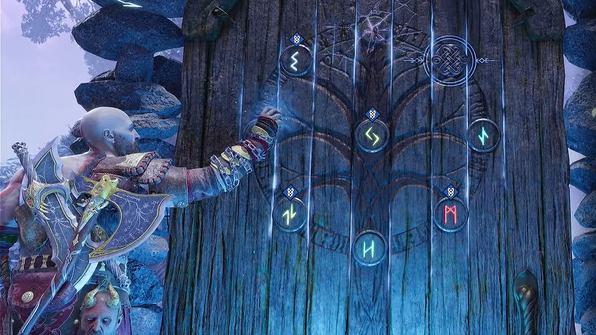

À l'instar du jeu de 2018, Ragnarök prend place dans le monde de la mythologie nordique, trois ans après le précédent opus. Alors que seulement six des neuf royaumes de la mythologie nordique pouvaient être explorés dans le jeu de 2018, Ragnarök voit le joueur explorer chacun des neuf royaumes et, contrairement au précédent opus, pendant l'histoire. Le royaume de flammes Muspellheim et le royaume de brumes Niflheim, désormais couvert de glace et de neige, étaient auparavant des royaumes annexes. Les autres royaumes qui font leur retour sont Alfheim, le foyer des elfes noirs et blancs, Helheim, la terre des morts et Jötunheim, la terre des géants, désormais explorable après la fin de l'histoire. Midgard, le royaume principal du jeu de 2018, est devenu un désert glacial, ayant radicalement changé durant le Fimbulwinter, un hiver de trois ans qui a débuté après la fin du précédent opus. Le Lac des Neuf, qui était auparavant navigable, est désormais complètement gelé. Les royaumes qui étaient auparavant inaccessibles sont Svartalfheim, la demeure industrielle des Nains, Vanaheim, le royaume des Dieux Vanes ainsi que de Sköll et Hati, et Asgard, le royaume des Dieux Ases qui est uniquement explorable durant l'histoire et n'est plus accessible après la conclusion.
Le gameplay repose sur un mélange d’action et de stratégie. Le joueur utilise différentes armes, comme la hache Léviathan et les lames du Chaos, chacune ayant ses propres capacités. Les combats sont dynamiques et demandent de la précision, avec des esquives, des parades et des attaques spéciales. Le jeu intègre aussi un système d’amélioration des compétences et de l’équipement, permettant de personnaliser son style de jeu. En parallèle, des phases d’exploration et des énigmes viennent varier le rythme.